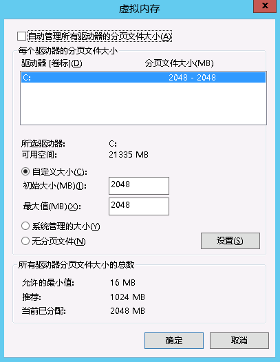

use ip and path to access dynamic ( Wamp Apache PHP ) website
首先，要在阿里云官网买一个服务器，通过学生认证就能享受优惠！我买的是Windows Server 2012 标准版 64位 中文版。买了服务器之后要操作它，所以应该用本地电脑通过远程桌面连接连接到阿里云服务器。
输入凭据：
进入到远程桌面后，要给服务器安装wamp，直接把wamp的安装包复制粘贴到服务器上进行安装就可以。发现还要装一个dll才能运行wamp，缺失的dll把名字进行百度搜索就能找到它的安装包下载，一样把它复制粘贴到服务器安装就能正常打开wamp了。
但是这个时候就会出现一个问题，就是wamp图表会变黄，但是不会变绿，为什么呢？图片变黄是因为Apache服务器已经成功开启，但是没有变绿是因为Mysql打开不成功，出现这种情况的原因就是服务器内存不够，所以要给服务器加虚拟内存。点击控制面板，系统和安全，系统，高级系统设置，高级，性能设置，高级，更改。

在此之后，就可以成功打开wamp了！把测试好的项目放在www文件夹下，就可以在远程服务器本地打开相关页面。
好了，现在到最重要的一环了，就是通过ip还有路径用外网访问服务器上的网站，当在浏览器内输入ip+path这时，会403 Forbidden,错误信息如下：
Forbidden
You don't have permission to access /mysteam/html/index.php on this server.
Apache/2.4.9 (Win64) PHP/5.5.12 Server at 139.129.47.176 Port 80
这提示你没有权限访问这个页面。也就是没有权限访问远程服务器上wamp的默认路径文件夹。这时就要修改httpd.conf中的相关参数。修改方法如下：
必须要改的：
在httpd.conf中按Ctrl+f,查找Require，之后将Require local改成Require all granted.将Require Denies改成Require all granted。总之，就是把所有Require 后面的全部改成all granted.
可能有些Apache版本还要修改：
ctrl+f,查找Directory标签，若里面出现 Deny from all,将其修改为 Allow from all,若里面出现Allow from 127.0.0.1,将其修改为Allow from all.
最后，就能成功通过ip+path访问在服务器上的网站啦~
如果还有什么其他问题解决不了的话，可以把问题通过工单反馈到阿里云平台，会有工程师帮忙解答的。